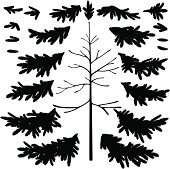
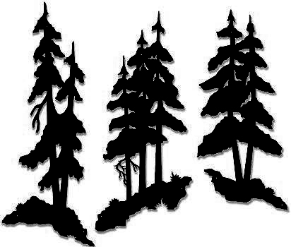
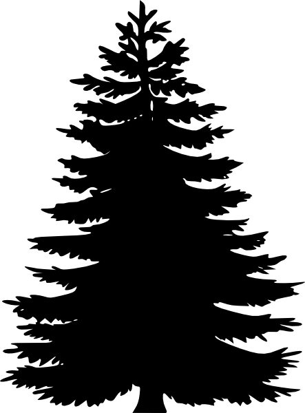
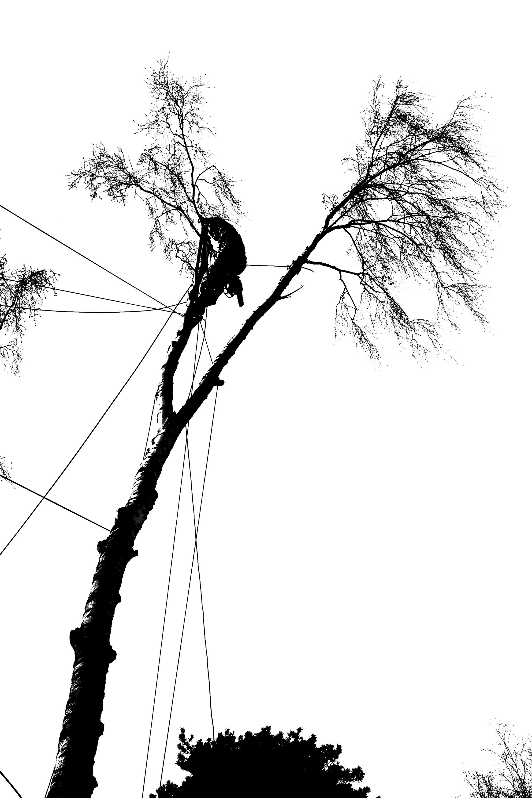
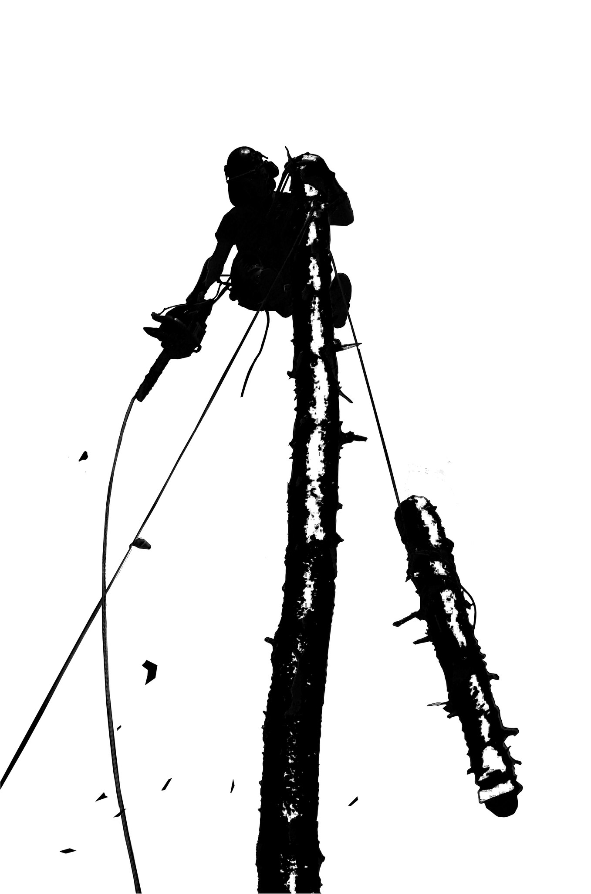

что полезно знать

Вовремя кронированное(обрезанное) растение более долговечно. Для этого очень важно соблюдать все правила обрезки, а именно: выбрать правильно время года, провести обрезку в подходящем возрасте, выбрать параметры и вид кронирования, соответствующий данному семейству и виду деревьев.
Существуют несколько видов подрезки, разберём основные: 1-санитарная подрезка; 2-формирование кроны; 3-поллардинг; 4-топинг. Они могут нанести вред и даже гибель растению при неправильном использовании методов, незнании биологии подрезаемого растения. Чтобы понять почему так получается давайте разберёмся.
1-санитарная подрезка- подрезаются сухие, больные, надломленные, и пересекающиеса ветви, это минимальный стрес для дерева. И даже профилактика от болезней и его старения, ведь только через сухие и больные ветви, будущие ворота инфекций, по серцевинным лучам древоразрушающие грибы проникают в спелую-неживую часть древесины, основну физической опоры дерева, чем нарушают механическую прочность и вызывают гибель растения. Санитарная подрезка это отдаление старости и смерти дерева.
2-формирование кроны- играет очень важную роль в жизни растения, если Вы планируте, чтобы растение использовалось как можно дольше и безопасно, Вами и Вашим поколением. Будь это насаждение в 1га или единичное дерево, при неправильном уходе можно его испортить.
Ошибка неправильного ухода в основном непоправима для нас, в силу того что большинство древесных пород превышают человека по продолжительности жизни, и результаты наших трудов удач или неудач в лесо-парковом хозяйстве, зачастую получает наше поколение.
Так и в формировании кроны, очень часто попадаешь в ситуацию, когда есть просьба сформировать крону у достаточно большых деревьев, уменьшив её на 50% и более. Сформировать крону можно, но размеры дерева сильно не уменьшатся, если делать это с минимальными рисками для здоровья большого растения. И желаемый результат - получить из большого дерева маленькое просто невозможен без вреда для него. Чтобы сделась такую формовку безболезненной необходимо это было делать немного рашьше.
3-поллардинг- в лесопарковом хозяйстве нужен для сдерживания роста больших деревьев (таких как дуб, липа, вяз, клён) и быстрорастущих (тополь, ива, и т.п.) Этот метод подрезки нужен при дефиците свободного места для роста растения, для уменьшения парусности кроны, с целью минимизировать риск падения дерева и его частей. Так-же правильно подрезанное растение более долговечно, так как намного дольше находится в молодом состоянии.
Основной принцип поллардинга заключается в регулярной подрезке молодых неодревесневших побегов выросших из спящих почек растения на скелетных ветвях и штамбе. Подзезка осуществляется только в период покоя растения. Переодичность подрезки 1-5 и более лет в зависимости от желаемой цели и биологии растения. Очень часто такая подрезка Практикуется после топинга.
4-топинг- самая вредоносная подрезка, так как открывает самые большие ворота для инфекций.
Больше всего оголяет спелую-неживую часть древесины, о которой было сказано выше, позволяя древоразрушающим грибам заселить растение. Также при данной подрезке дерево лишается большей части собственной фитомассы, что в дальнейшем приводит к нарушению ассимиляционных, фотосинтезирующих и запасающих процессов, и приводит к ослаблению дерева, к цепной реакции частичному или полному отмиранию корневой системы и полной гибели подрезанного дерева.
Данная подрезка рекомендуется, только при необходимости, и в несколько этапов, что даст возможность растению адаптироваться к резким изменениям. В каждом этапе максимально срезанная часть кроны не может превышать 25% за один сезон.

Системы стабилизации различаются сроками установки: 1 -кратковременные, которые необходимы при удалении аварийных деревьев; 2-временные стабилизации, те которые используют для выравнивания, временной поддержки и сцепки деревьев; и 3 - постоянные стабилизации необходимые для устойчивости растения.
Каблинг- от англ. cable — канат, тросовая\канатная система стабилизации бывает - статической и динамической.
Статическую используют в развилках на многоствольных деревьях с крупными ветвями, когда подвижность скрепленных между собой ветвей минимальная или нулевая. В статической стабилизации используется как синтетический, так и стальной трос.
Динамическая система ставится на ветви и деревья с подвижностью,
что даёт дереву находится в естественном состоянии ведь подвижность важна для транспорта воды в дереве,
и самостоятельного распределения укрепляющих процессов ствола, необходимых растению. Такая система нужна при пиковых назрузках на дерево и его наклонах, при которых оно может сломаться.
В комфортных для дерева условиях (без нагрузок) система стабилизации слегка провисает и не функционирует. Используется синтетический трос с амортизатором.
Каблинг может обеспечивать страховку разных деревьев и их частей:
1. страховка многоствольного дерева, когда от двух и более стволов на одном дереве укрепляются на высоте 2\3 от размера кроны;
2. страховка ветвей с опасным углом, ветвь страхуется в двух местах комлевой и вершинной части;
3. страховка деревьев, имеющих риск ветровальности (у которых поверхностные корни) и буреломности (когда ствол может сломаться);
4. страховка наклонных деревьев, может устанавливаться временно, с периодическим обслуживанием, до выпрямления растения, в этом случае используется статическая система.
Брейсинг- от англ. bracing — крепление, система жестких стяжек и креплений, винтовых хомутов, шпилек, и скоб. Этот метод исключает любую динамику, поэтому в основном устанавливается на взрослых деревьях в средней и нижней части растения.
Брейсинг устанавливается там, где есть повреждения, с которыми дерево остается жизнеспособным, в надломах, развилках,трещинах, морозобоинах. Также устанавливается на неповреждённых деревьях в местах имеющих риск повреждений, например, в местах развилок у деревьев с кроной имеющую большую парусность. Брейсинг в отличие от каблинга требует более частого наблюдения и обслуживания по мере роста дерева и погодных условий. Каблинг и брейсинг имеют разные функции и могут дополнять друг друга, так очень часто брейсинг дублируется каблингом, что минимизирует изменение в конструкции брейсинга, что очень важно.
Гайинг- от англ. guying — ванты, это система вантовых растяжек, с использованием жестких креплений (анкеров и якорей), вкручивающихся в землю; или других устойчивых наземных и надземных конструкций, гайинг используется для всех возрастов, в основном применяется для молодых растений со слабой корневой системой. Также очень часто используется при удалении аварийных и наклонных деревьях, временно используется при выпрямлении наклонных растений в молодом возрасте
Пропинг- от англ. propping — поддержка, система подпор, применяется для всех возрастов, для наклонных и клонящихся к земле ветвей в кроне растений, для предотвращения их повреждений, часто используется для плодовых деревьей осенью в момент урожая; также для взрослых и старовозрастных ценных деревьев (например,таких как Дуб черешчатый и Дуб виргинский) Для пропинга используются как специальные колонны на больших деревьях, так и подручные материалы, например, рогатина от срезанной ветви на молодых плодовых деревьях.

Жизнь растений в природе идет естественным путём, грибы, насекомые, стихия, и даже природные пожары, это всё неотъемлемая часть круговорота, который дает новую жизнь. Места, в которых находятся люди подвержены большим изменениям в биологическом отношении. В первую очередь, это изменения, которые не идут на пользу растениям. Другие изменения это уход, как правильный, так и неправильный
Профилактика- основой профилактики является уменьшение антропогенной нагрузки. Растения сказали бы так: "Вы, люди, нам не нужны, нам без вас - лучше." А если контакта нельзя избежать надо постараться его минимизировать, для этого, например, существуют всем известные экотропы.
Большинство растений очень не любят резких изменений, связанных с их жизненными потребностями. Это могут быть: изменения уровня грунтовых вод (их дефицит или избыток); затопление или уплотнение почв, меняющее приток необходимого растению кислорода к корневой системе; излишний свет или затенённость; изменение ветровых потоков, как результат изменений ландшафта; механические повреждения и другие эколгические факторы. Такие резкие изменения для многих растений являются первой причиной ослабления, потому что они не умеют быстро меняться физически, и быстро адаптироваться к новой среде обитания.
Также немаловажно биологическое разнообразие, если речь идёт о комплекте насаждений. Монокультурные насаждения всегда более уязвимы для фитопатогенов и вредителей.
Перечисленные факторы вызывают ослабление растения с его последующие заболенаниями. Избегая нарушений биологических потребностей растения, можно избежать и его заболеваний.
Профилактические меры также включают в себя использование удобрений для улучшения имунных качеств растения, использование фунгицидов в весенний период против грибных заболеваний, и репеллентов для защиты от вредителей
Мониторинг- одной из важнейших мер профилактики является наблюдение и способность вовремя определить, когда растения начало заболевать. И когда уже нет смысла держать на территории растение
которое нельзя восстановить и которое является потенциальным источником болезней и инфекций.
Разобраться в этом нам поможет данная шкала, делящая древесные породы на категории жизнеспособности в зависитости от их заболеваний, поврежрений, и состояния. Для этого мы воспользуемся такими диагностическими определениями как:
дехромация-изменение цвета листьев\хвои с естественного на светлый и бурый; дефолиация; усыхание скелетных ветвей; суховершинность.
Категории:
1-я без признаков повреждения, встречаются редко только в молодом возрасте;
2-я дехромация и дефолиация до 25%, считается абсолютно здоровым состоянием;
3-я дехромация и дефолиация от 25% до 50% ослабренное состояние, деревья с суховершинностью сразу попадают в эту категорию, считается что растение из 3-й категории уже не способно вернуться во 2-ю;
4-я дехромация и дефолиация от 50% до 75% сильно ослабленные. 75% есть точка невозврата, невосстановления растения, такие деревья назначаются в рубку;
5-я дехромация и дефолиация более 75%-свежий сухостой. В городских условиях 5-я и выше категории, не имеют смысла в рассмотрении так как деревья в этой карегории несовместимы с условиями и нормами безопасности;
6-я сухостой прошлых лет;
6а валежник.
Лечение- Ознакомившись с началными пунктами по уходу мы подошли к самому ответственному когда исходя из наших действия будет зависить дальнейшая жизнь расения.
Болезни\фитопатогены. Как мы уже говорили, основой всех болезеней является ослабленное состояние расения. Что делать, если с защитой от вредных воздействий внешней среды дерево не в силах справится самотроятельно, в этом случае мы можем ему помочь подкормкой необходимыми микроэлементами или обработкой, правильно подобранными препаратами. которые могут быть фунгицидного, бактериального, или вирусного действия. При выборе удобрений для подкормки, необходим мониторинг за растением, который укажет на признаки недостающих веществ. Также необходимо сделать химический анализ почвы, который покажет уронень pH и наличее микроэлементов в почве. После химического аналика почвы возможно будет необходимо сделать рекультивацию - возвращения состава почвенных условий, которые подходили растениям до изменений, которые послужили причиной болезней. Внесение удобрений происходит путём подлива под корень или при помощи иньекций. Препараты применяются как с системным, так и контактным действием в зависимости от биологии фитопатогенов.
Вредители\насекомые фитофаги. Давайте рассмотрим хвое-листогрызущих и стволовых вредителей.
Возьмём для примера таких насекомых как:
Хермесы лат. Adelgidae - вредитель хвойных культур. Особенности в борьбе с ним то, что это насекомое накапливает на себе восковой слой, и не все контактные инсектициды на него действуют,
само насекомое по природе красного цвета а при накоплении воскового налёта становится розовато-белым или полностью белым, в таком случае необходимо тщательно выбирать препарат который будет контактно-системного действия.
Короед тивограф лат. Ips typographus - вредитель Ели европейской лат. Picea abies. Это стволовые вредители, они опасны тем что они ведут скрытый образ жизни, находясь под корой дерева которое служит отличным защитным материалом,
от экологичекких и химических воздействий, и выходят на поверхность только для поисков нового кормового дерева.
Короед типограф, обладая огромной численностью, является наиболее опасным видом и сейчас представляет самую большую угрозу для еловых насаждений. Борьба с ним возможна при правильном подборе системных препаратов, и методов.
Основной задачей является недопустить ослабления насаждений, или, в частном случае, одного дерева. Ослабление может вызваться, осушением\затоплением; механическими повреждениями при недобросовестной валке или уходе; грибными заболеваниями.
Только, когда дерево ослаблено, типограф его заселит. Исключением из этого правила будет ситуация, когда уже сформировался очаг массового размножения короеда и он, съев все ослабленные деревья, за счет своей численности легко заселяет и здоровые.
Для препятствия заселению используются биологические препараты репелентного действия.
В случае, где дерево уже заселено и стадия развития насекомых внутри дерева на начальном уровне, необходимо произвести иньекторование системными препаратами. В случае где стадия развития насекомых под корой уже высокая,
и большая часть флоемы (проводящей ткани дерева) уже съедено насекомыми, дерево необходимо удалить и вывезти. Для погибших в осенний период деревьев наилучшим временем удаления является зима и весна до мая месяца,
чтобы новое потомство не успело сделать новый перелёт. В местах, где зимовали заселённые типографом деревья, необзадимо сделать обработку почвенной подстилки инсектицитами по проэкции кроны,
подстилку рекомендуется расчищать от снега в зимний период, что будет препятствовать успешной зимовке насекомых в подстилке.
разное

Удаление деревьев частями это размеренный, трудоёмкий, но самый безопасный способ. Все спиленные части имеют небольшой вес, поэтому ими легче управлять - высчитывать точную траекторию спуска или падения. В данном случае исключаются все возможные риски как для исполнителя, так и для заказчика.

В нашем случае такелажные работы применяются при работе с аварийными деревьями.
Это необходимо, когда приходится поддерживать, поднимать деревья или части деревьев, упавшие на постройки, дома, и соседние деревья.
Весь подъем осуществляется при помощи полиспастов и растущих рядом деревьев, которые блокируются вместе для устойчивости.

Мы специализируемся на удалении аварийных деревьев, не имеющих свободного подъезда для спецтехники.
Так-же выполним такие работы как : кронирование, частичная обрезка, удаление пней, переработка ветвей в мульчу (удобрение), вывоз порубочных остатков.
СПб\ЛО
+7 (953) 372 53 87 Александр
+7 (906) 249 52 77 Дмитрий
+7 (812) 960 55 20 Константин
+7 (981) 965 09 24 Виктор
+7 (981) 157 29 33 Юрий


{kind=link}
{kind=link}
{kind=link}
{kind=link}
{kind=link}